import geopandas as gpd # for spatial data
import pandas as pd # for non-spatial dataOverview of Canadian census data
📥 Click here to download this document and any associated data and images
This section will cover:
- an overview of Canadian census data
- where to find census data on the Statistics Canada website
- the geographic scales at which census data is available
- how to use CensusMapper or the
cancensuspackage to download or explore census data
National censuses, like the Canadian and U.S. censuses, are very common data sources analyzing demographic and socio-economic data pertaining to specific places.
Statistics Canada conducts a national census of the population every five years, asking a range of demographic and socio-economic questions. The results paint a demographic portrait of the country at the time period the census was conducted.
The most recent census at the time of writing was in 2021. Lots of census data are publicly available for download, across the following topics:
- Age
- Commuting to work
- Education
- Ethnocultural and religious diversity
- Families, households, and marital status
- Housing
- Immigration, place of birth, and citizenship
- Income
- Indigenous peoples
- Labour
- Language and language of work
- Mobility and migration
- Population and dwelling counts
- Types of dwellings
Most data are pre-aggregated to a variety of geographic boundaries (e.g. provinces, cities, neighbourhoods, blocks, etc.), which allow for finding a variety of demographic and socio-economic statistics for specific places as well as for making a range of maps.
For example, here’s a map of population density in the Greater Toronto Area (GTA) and the census block level, clearly showing where people are clustered throughout the region.
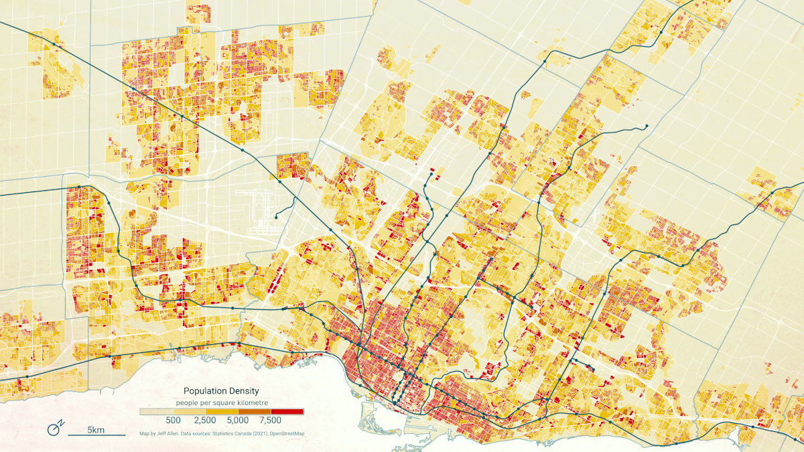
Overview of the Canadian census
There are two parts to the census, the short-form survey and the long-form survey. The short-form survey asks a set of basic household and demographic questions (e.g. address, age, marital status, etc.) and is sent to all households in Canada. The long-from survey is sent to 25% of households in Canada. It asks additional questions pertaining to a broader range of demographic, social, and economic topics (e.g. religion, education, journey to work, etc.). Statistics Canada also augments collected census survey data by joining in data from other administrative sources, including income data collected by the Canadian Revenue Agency (CRA).
Census data are collected primarily on a household-by-household basis (one adult member in each household usually fills out the census on behalf of everyone in the household). Data of individual responses from the census are often called census “micro-data”. Because of personal identification concerns, this data is only accessible by accredited researchers. (However, note that a public use microdata file called the PUMF is available. It is a random sample of the overall population, with several of the identifying variables removed, such as home addresses and postal code).
Census geography
There are a number of geographic boundaries available with associated census data, ranging in scale from city blocks to the entire country. Below is an example of commonly used boundaries for urban-scale maps and analysis.
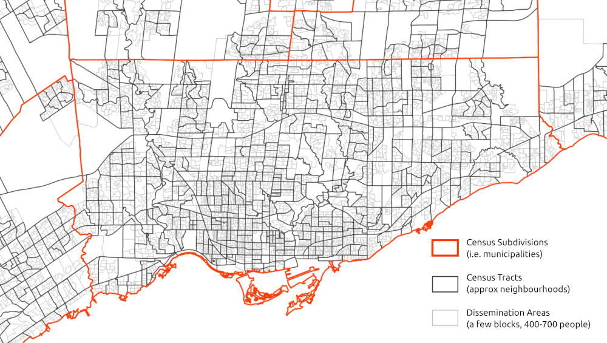
Each polygon on this map has associated publicly available summary census data. Joining this tabular data to these spatial boundaries allows for making a wide range of maps showing the distribution of demographics and socio-economic variables
You can bulk download census data for a number of geographic levels and formats from the Statistics Canada website. These downloads are essentially copies of the Census Profile data, but for all regions noted in each row.
One issue to be aware of is that census boundaries can change over time each time a census is conducted. Doing a longitudinal analysis of spatial census data often requires using a technique like areal interpolation, in which data are joined to a common set of spatial units prior to analyses.
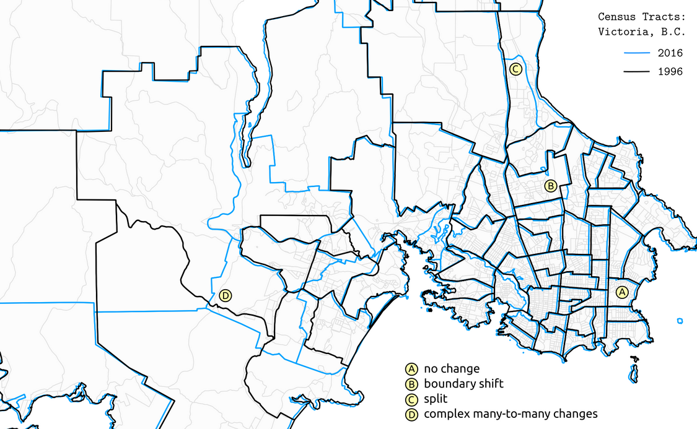
Finding census data
Summaries (i.e. aggregations) of census data to a range of geographic areas are publicly available to view online or download. These are super useful for understanding the demographics of a place. For example, the total population in a province, the number of people who speak Spanish in Toronto, or the average income in a specific neighbourhood.
The Census Profile tables on Statistics Canada’s website allow for searching for census data for specific variables and geographic areas. For example, here’s an output of “Knowledge of Official Languages” in Ontario.
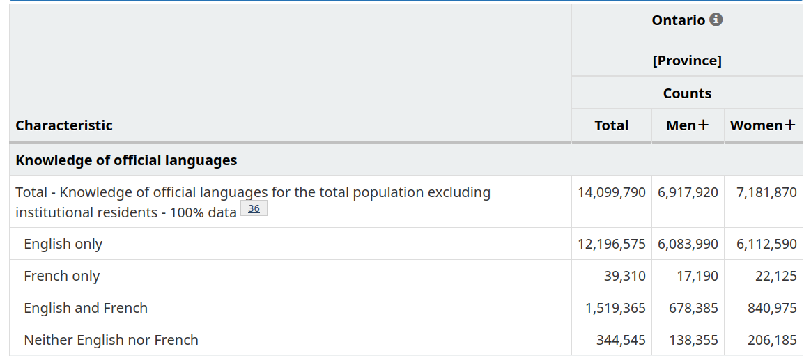
When working with census data, it’s often advisable to use the Census Dictionary, the main reference guidebook, to understand what different data variables and geographies in the census represent. For example, here’s the entry for Knowledge of official languages.
Census profile data is typically limited to single categories totals (e.g. number of people who speak French by gender), as shown in the table above. However, if you are interested in cross-tabulations, that is, summaries across multiple categories (e.g. number of people who have knowledge of French who also speak French at work, e.g. total number low-income residents who live in different types of housing), then there are a variety of Data Tables available for this purpose.
If neither the Census Profile or Data Tables fit your purpose, there is also a Public Use Microdata File (PUMF). This is a non-aggregated (i.e. each row is a disaggregated individual-level response) dataset covering a sample of the Canadian population. This data can be queried and cross-tabulated across any number of categories included. For privacy reasons, the data only include larger geographic linkages (e.g. provinces, large metro areas), and are only a sample of the overall census.
Historical census data
Canadian Longitudinal Tract Database (CLTD)
Census geographies change over time, and this is where the Canadian Longitudinal Tract Database (CLTD) comes in handy. Using areal interpolation methods, it’s standardizes historical census tract data from 1971 to 2016 to a common set of geographic boundaries - namely 2021.
Standard geography across time allows for easy comparison of changing demographic variables. This could include an analysis of how a neighborhood has changed over time, which would otherwise be difficult if the boundary for that neighborhood changes every 5 years.
UNI·CEN
Likewise, historical census data generally can be a little bit hard to come across and organize. Unified Infrastructure for Canadian Census Research (UNI·CEN) compiles a huge amount of historical data - with standard census tables from 1951 to 2021, and historical boundaries from 1851 to 2021.
Making maps and downloading data
If you’re familiar with the R coding language, cancensus is a great package for downloading Canadian census data via the API. Take a look at the documentation to learn how to use it.
Otherwise, another great option for exploring and downloading this data is CensusMapper. CensusMapper is a website for exploring and downloading census data across Canada. When we first land on the website, it defaults to a map of population density in Vancouver and shares a number of preset options for making maps.
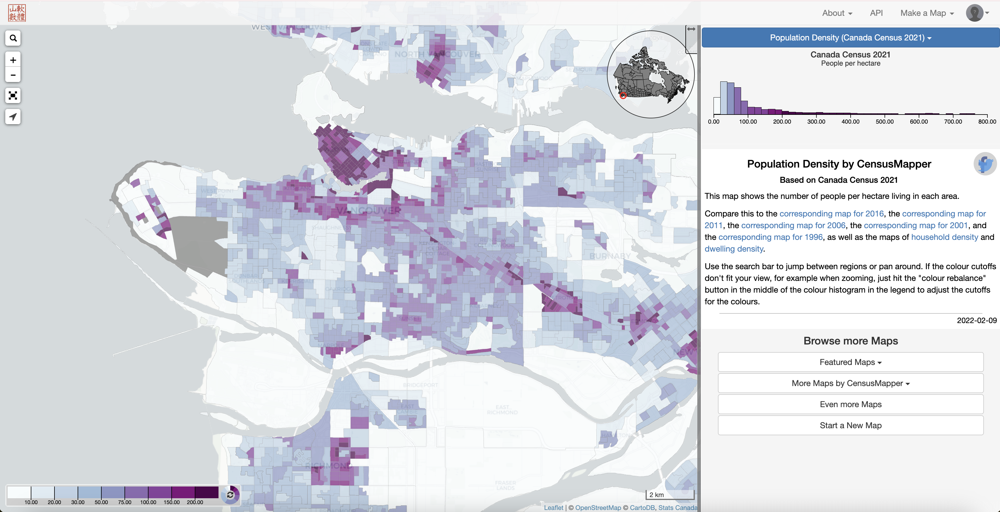
Make a quick map
If we want to search for a specific census variable, we can click Make a Map at the top right of the screen, and then select the year (e.g. 2021):
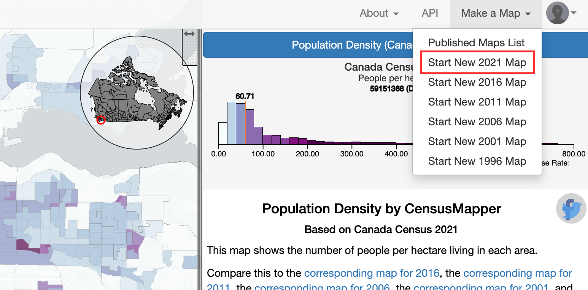
Here we can search and explore all available data. By using the search icon at the top-left to search for a specific geography, or by clicking the inset Canada map (top right of the map), we can navigate elsewhere in the country. For example, let’s type “Toronto” in the search bar to change from Vancouver to Toronto:
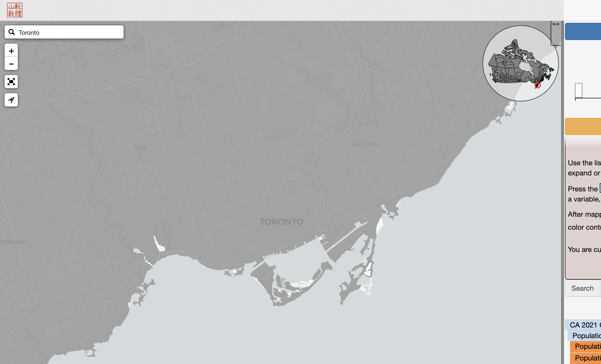
Now let’s pick a variable from the “Available Data” list to map. Here we’ll select “Average age”, but click around to see which other variables are available.
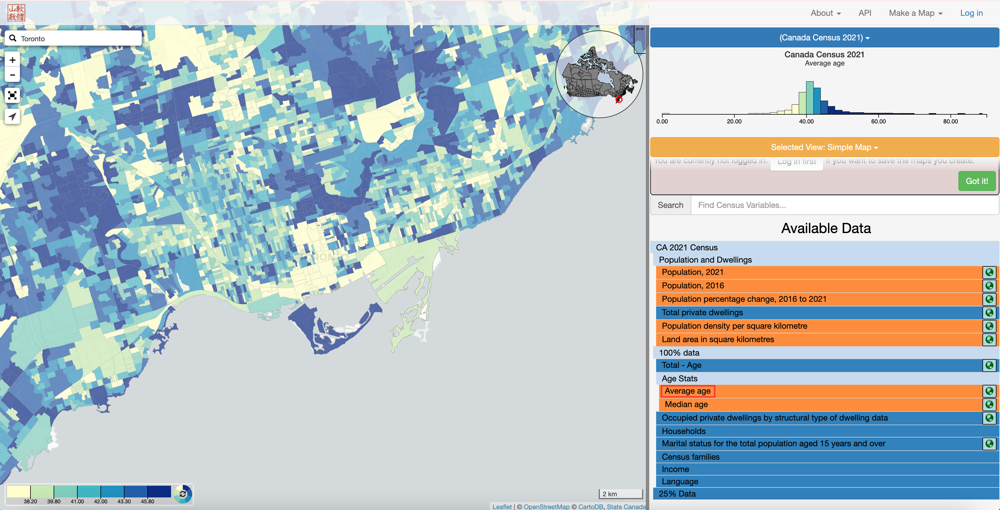
To determine what geographic scale of aggregation is being mapped, click on one of the polygons in the map and see what the pop-up says:
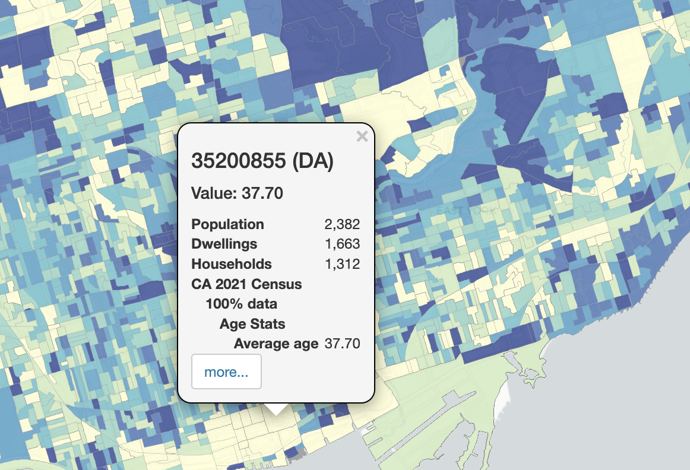
This pop-up lists the identification number of the “DA”, which is a dissemination area. The dissemination area is one of the smallest levels of geographic aggregation available through the Census. See this Census hierarchy of geographic units to understand how they relate to each other.
Download Census data
We can also use CensusMapper to download census data for specified geographic boundaries. To do so, click on API at the top right. An API, or “application programming interface”, is a connection between computers or programs and is often used to download data from online sources. To use the API, you’ll need to create a (free) account and log in. Do this by clicking “Log in” at the top right.
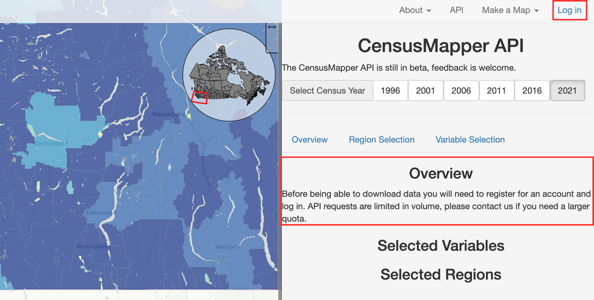
After logging into your account, select a year you want to download data for and click on the “Overview” tab. It should look like this:
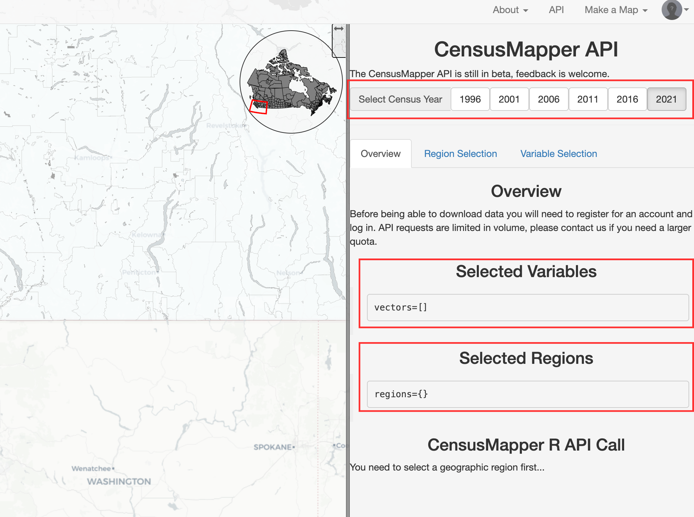
To select the variable(s) you want to download, click on the “Variable Selection” tab. Navigate to the variable(s) of interest and click on the variable code, which is typically a green, blue or pink box. For example, let’s select “Population percentage change, 2016 to 2021” (v_CA21_3) and “Total - Age (Male)” (v_CA21_9). Note the “21” in the variable codes, which represents the data year. This would change to “v_CA16_” for 2016 data.
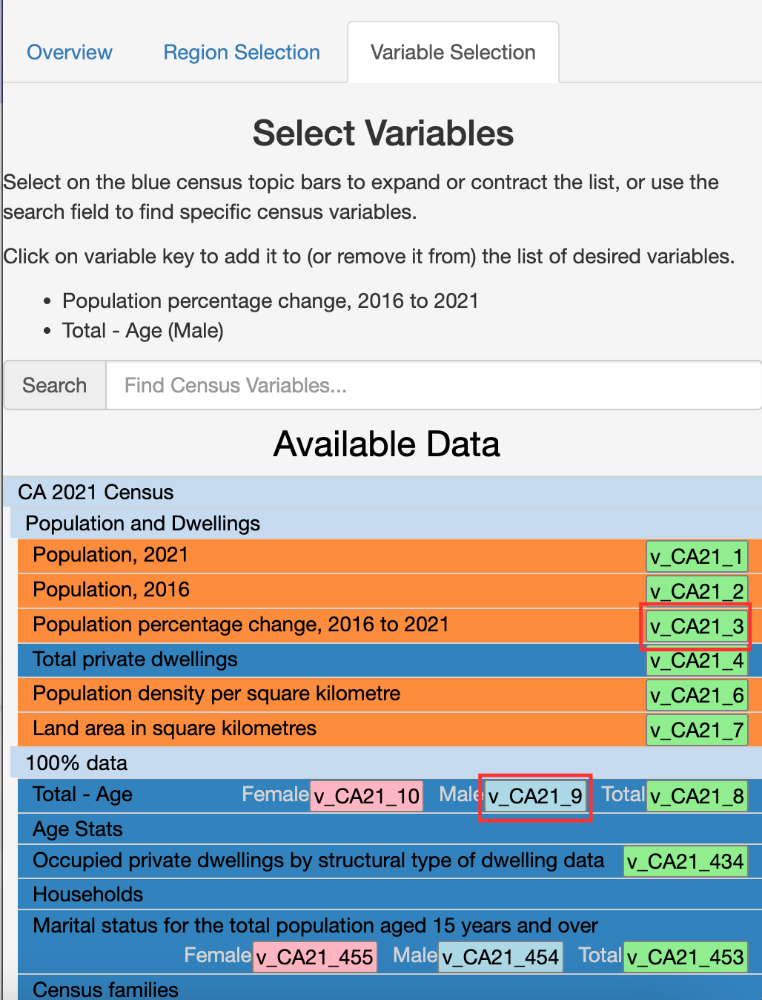
To select the region you want to download data for, navigate to the “Region Selection” tab, zoom to the appropriate geographic level on the map using the “+” and “-” buttons at the top left of the map, and click on the region. For example, to download data for the entire city of Toronto, zoom out until the outline of the city boundary is visible and click on it.
To see our selections of region and variable(s), go back to the “Overview” tab. The variable(s) you selected should be listed in the “Selected Variables” section, and the region you selected (the city of Toronto) should still be highlighted on the map as well as listed in the “Selected Regions” section. Take note of the year that’s selected at the top right of the screen; this is the year you will download the data for.
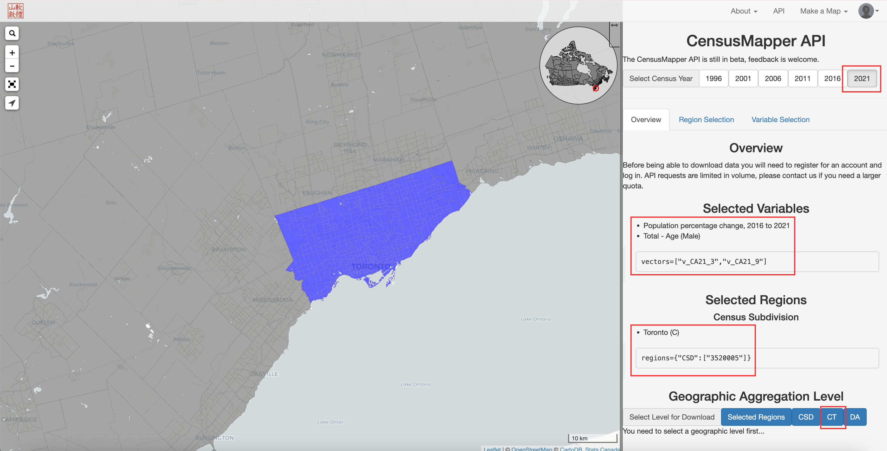
When you’re ready to download the data, click on the geographic unit you want (again, see this explanation of the Census hierarchy). If you want to download data at the census tract level, for example, click on the “CT” button.
Then click on “Download Variables Data”, which downloads a non-spatial CSV file called “data.csv” to the “Downloads” folder on your computer. If you also want the spatial data that corresponds with this CSV file (e.g., if you want to be able to create a map), click on “Download Geographic Data”, which will download “geos.geojson” to your “Downloads” folder.
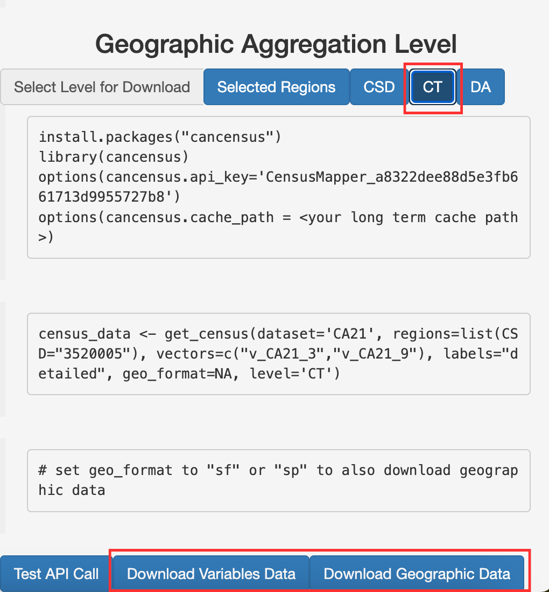
Join spatial and non-spatial census data in Python
Because Census Mapper does not allow you to download a spatial dataset that already includes the variables you selected, you’ll need to join the spatial data (geos.geojson) with the non-spatial data (data.csv). Here’s how you would do that in Python:
Load the data:
# filepath = "" # replace this with the directory where these files are located
spatial = gpd.read_file(filepath + "geos.geojson") # spatial data
vars = pd.read_csv(filepath + "data.csv") # non-spatial dataspatial.head(2) # look at the first two rows| a | q | t | dw | hh | id | pop | dw16 | hh16 | name | rpid | ruid | pop16 | rguid | geometry | |
|---|---|---|---|---|---|---|---|---|---|---|---|---|---|---|---|
| 0 | 6.8192 | 0 | CT | 253 | 235 | 5350001.00 | 599 | 274 | 247 | 0001.00 | 35535 | 3520005 | 595 | 3520 | MULTIPOLYGON (((-79.33526 43.62681, -79.33561 ... |
| 1 | 3.3926 | 0 | CT | 294 | 284 | 5350002.00 | 604 | 279 | 270 | 0002.00 | 35535 | 3520005 | 620 | 3520 | MULTIPOLYGON (((-79.38245 43.62556, -79.382 43... |
spatial2 = spatial[["id", "geometry"]] # only keep relevant columns
spatial2.head(2)| id | geometry | |
|---|---|---|
| 0 | 5350001.00 | MULTIPOLYGON (((-79.33526 43.62681, -79.33561 ... |
| 1 | 5350002.00 | MULTIPOLYGON (((-79.38245 43.62556, -79.382 43... |
vars.head(2)| GeoUID | Type | Region Name | Area (sq km) | Population | Dwellings | Households | v_CA21_3: Population percentage change, 2016 to 2021 | v_CA21_9: Total - Age | |
|---|---|---|---|---|---|---|---|---|---|
| 0 | 5350001.0 | CT | 1.0 | 6.8192 | 599 | 253 | 235 | 0.7 | 335 |
| 1 | 5350002.0 | CT | 2.0 | 3.3926 | 604 | 294 | 284 | -2.6 | 280 |
Let’s only keep the variables we actually care about - GeoUID, which we’ll use to join with the spatial data, plus the two variables we selected in CensusMapper. We’ll rename these columns because the current names are too long.
vars2 = vars[["GeoUID",
"v_CA21_3: Population percentage change, 2016 to 2021",
"v_CA21_9: Total - Age"]]
vars2 = vars2.rename(columns={"v_CA21_3: Population percentage change, 2016 to 2021": "pop_change",
"v_CA21_9: Total - Age": "total_males"})
vars2.head(2)| GeoUID | pop_change | total_males | |
|---|---|---|---|
| 0 | 5350001.0 | 0.7 | 335 |
| 1 | 5350002.0 | -2.6 | 280 |
We want to join these datasets together, but first let’s make sure that the columns we’re joining them on have the same data type:
spatial2["id"].dtypedtype('O')vars2["GeoUID"].dtypedtype('float64')The id column in spatial2 is a string while the GeoUID column in vars2 is a float (or numeric value). Let’s turn GeoUID into a string so the join will work correctly.
vars2.loc[:, "GeoUID"] = vars2["GeoUID"].astype(str)vars2["GeoUID"].dtypedtype('O')Now let’s take another look at the two dataframes to make sure their tract ID columns look the same:
vars2.head(2)| GeoUID | pop_change | total_males | |
|---|---|---|---|
| 0 | 5350001.0 | 0.7 | 335 |
| 1 | 5350002.0 | -2.6 | 280 |
spatial2.head(2)| id | geometry | |
|---|---|---|
| 0 | 5350001.00 | MULTIPOLYGON (((-79.33526 43.62681, -79.33561 ... |
| 1 | 5350002.00 | MULTIPOLYGON (((-79.38245 43.62556, -79.382 43... |
Notice that the GeoUID column only has one 0 after the decimal, whereas the id column has two 0s after the decimal. Let’s check to see how many characters are in the GeoUID column versus the id column:
vars2["GeoUID"].str.len().value_counts()GeoUID
10 353
9 232
Name: count, dtype: int64spatial2["id"].str.len().value_counts()id
10 585
Name: count, dtype: int64The values in GeoUID column in vars2 have either 9 or 10 characters, while the values in the id column in spatial2 always have 10 characters. This means we have to “pad” the GeoUID column with 0s at the end:
vars2["GeoUID"] = vars2["GeoUID"].str.ljust(10, '0')Now let’s see if they match:
vars2.head(2)| GeoUID | pop_change | total_males | |
|---|---|---|---|
| 0 | 5350001.00 | 0.7 | 335 |
| 1 | 5350002.00 | -2.6 | 280 |
spatial2.head(2)| id | geometry | |
|---|---|---|
| 0 | 5350001.00 | MULTIPOLYGON (((-79.33526 43.62681, -79.33561 ... |
| 1 | 5350002.00 | MULTIPOLYGON (((-79.38245 43.62556, -79.382 43... |
This looks good, so let’s finally join (or “merge”) the dataframes. Below, how="left" means we’re keeping all rows from the first dataset (spatial2) and any matching rows from vars2. Both datasets should contain the same number of tracts, but let’s do this just in case there are some tracts in spatial2 that are not in vars2. If we make a map, for example, we would want to show all of the tracts even if some don’t have data.
new_df = pd.merge(spatial2, vars2, left_on="id", right_on="GeoUID", how="left")
new_df.head(2)| id | geometry | GeoUID | pop_change | total_males | |
|---|---|---|---|---|---|
| 0 | 5350001.00 | MULTIPOLYGON (((-79.33526 43.62681, -79.33561 ... | 5350001.00 | 0.7 | 335 |
| 1 | 5350002.00 | MULTIPOLYGON (((-79.38245 43.62556, -79.382 43... | 5350002.00 | -2.6 | 280 |
Let’s make sure the new dataframe is a GeoDataFrame, which is spatial and can be mapped, and not a non-spatial DataFrame.
type(new_df)geopandas.geodataframe.GeoDataFrameGreat! Time to export this spatial dataset that now contains the two variables we downloaded from CensusMapper:
new_df.to_file(filepath + "census_data.geojson", driver="GeoJSON")Now we can use this file to create a map. For example, see the chapter in this textbook on how to create a choropleth map.